Yes, it may be hard to believe, but there are still people in this world who use Internet Explorer. And IE users make up a significant enough portion of our audience that we have to make sure our pages are usable back to at least IE8.
I used a Windows 7 VM to test out the "manage your subscription" page (mobile ver. below) on IE8, and my nice, pretty page >
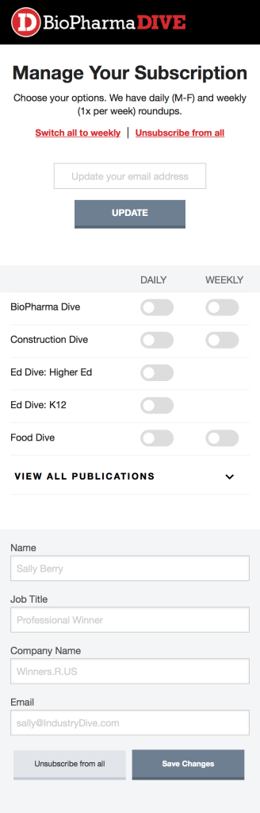Ended up looking like this (not to mention none of the javascript worked) >
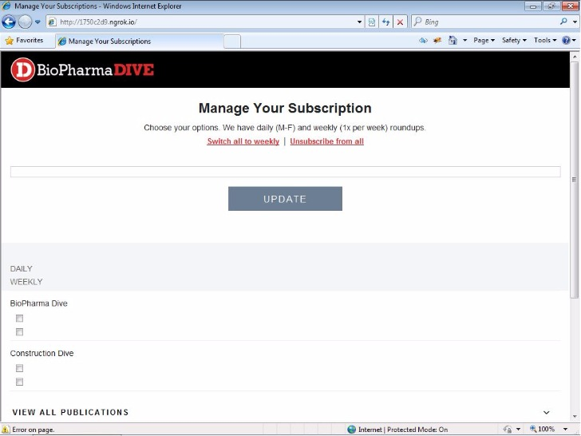After much struggle, I reached this solution for IE >
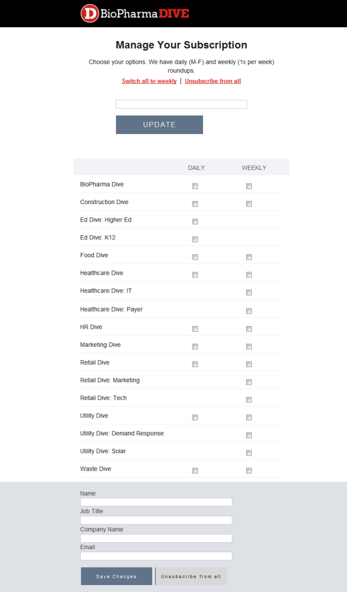It's not pretty, but at least it works?
That might be the most important time to step back and take a critical look at what you’re building. Ask yourself the important questions again.
- What is the user’s goal when they come to this page?
- Does my design help them accomplish that goal quickly and easily?
Early this week I thought I was nearing the end with the new "manage your subscriptions" page:
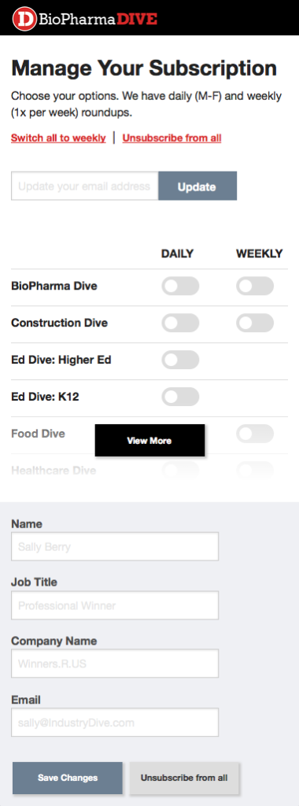But there was still something about this design that didn't feel right. We don't want the "view more" to stand out more than the "update email." Most users won't come to this page primarily to view more publications.
The arrangement of things at the top also felt a little awkward or "stiff" if you'll allow me to be a bit abstract about it.
So I went back to the drawing board to rethink how to approach these points.
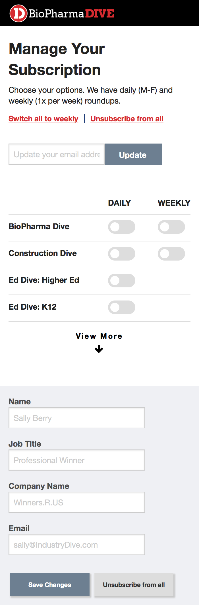 >> 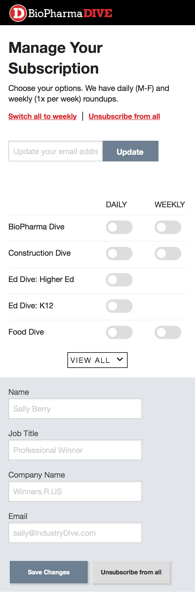 >> 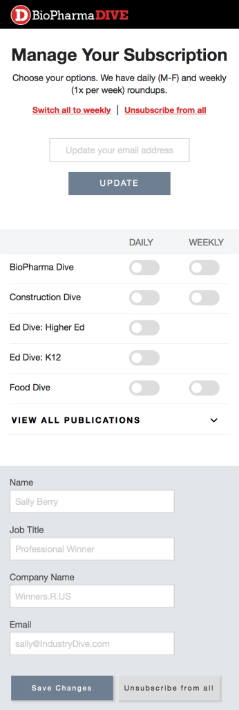This is where I left off at the end of the week. The centered text at the top flows better and helps lead the user's eye. The "view all publications" doesn't dominate the page, and it's more clear to the user what will happen when they click on it.
There are still a few buggy things with the JavaScript I used for the view all dropdown, but I think we're ready to move on to browser testing! (for now.)
This week I started coding some page mockups with Foundation. It was my first time using it, and wow. It really makes my life easier! The best part is the grid system, which makes it easy to build a responsive and flexible page.
The syntax in Foundation is longer than Bootstrap (“medium-2 columns” vs “col-md-2″) which means more typing, but overall I think I prefer Foundation.
Foundation is Sass-based, and uses ems rather than pixels for sizing. It also has switches! I needed these for one of the pages I was working on, and it was super quick to just add them in.
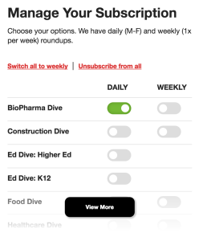The visibility classes also make it easy to hide and show different things based on the size of the screen or the type of device.
Sublime. Sublime. Sublime.
Customizable. So many plugins/packages are available for Sublime. There are lots of preset color themes as well as the ability to make or download more (see: Colorsublime)
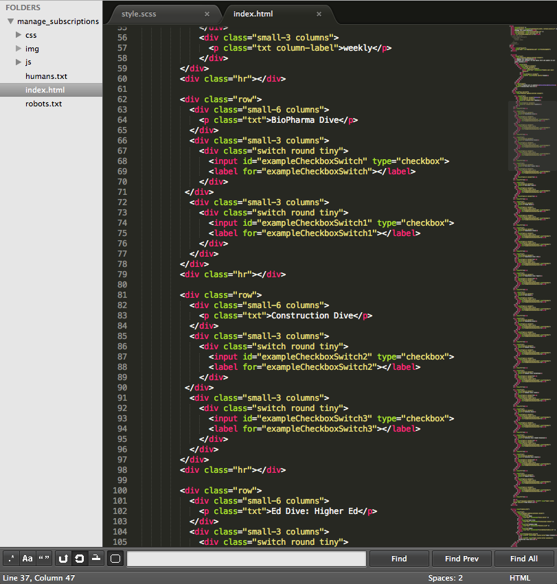The mini map on the right makes it easy to orient yourself in scripts with hundreds of lines or more.
It's also easy to do search and replace using Command+F, for when you need to replace all instances of a color, etc.
Can't go wrong with good ol' post its.
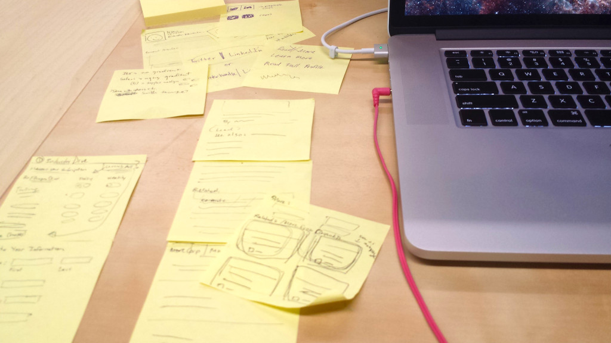Seems like we're all big Spotify users here at Industry Dive.
However, Spotify doesn't carry a lot of my favorite (foreign) music, so at home I usually rely on my iTunes library.
There’s something about the atmosphere of “we’re all in this together” that really drives me. In my campus apartment I like to study in the living room rather than my bedroom for the same reasons (also because it’s farther from my bed and the temptation of sleep).
I’m bringing this up because I just finished my first week as a front-end design intern at Industry Dive, and there’s definitely something different about working at a start-up.
I think this (hilarious) video can explain it better than I can:
I was able to hit the ground running on some projects.
Within the first few days I was already working on some mock-ups for a new "manage your subscriptions" page, as well as a solution for driving readers to more content from an article page.
I usually use Illustrator for those type of things, but I decided I would try my hand at Keynote. I just recently bought my very own Macbook Pro (yes, I used a PC for the past 21 years. yes, I've been using the computer since I was 4.), so I hadn't used the software before.
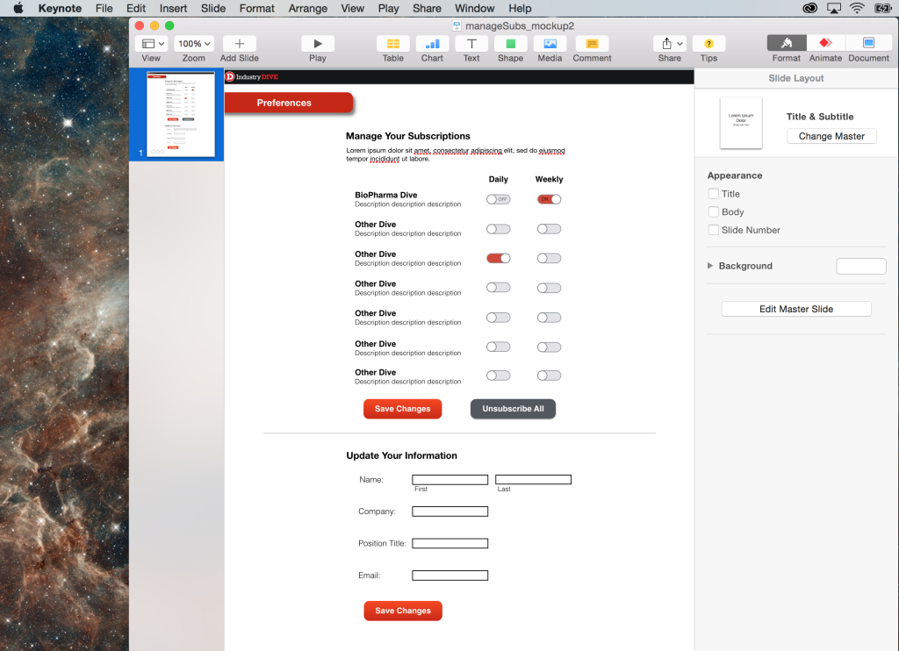The great thing about Keynote is that it really speeds up the process; especially in the early stages of a project when functionality matters more than aesthetics.
With Keynote you can also add transitions and animation that provide the illusion of real navigation.
I started actually building the page this week too, but I'll leave that until my next post.